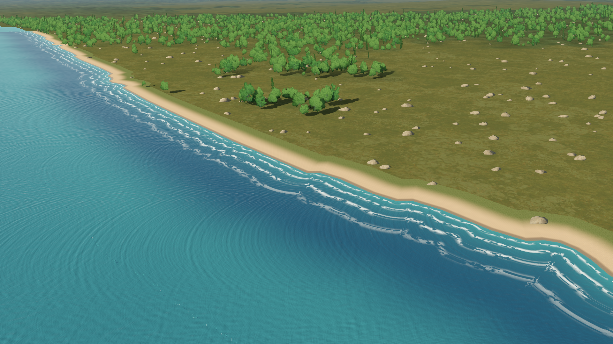
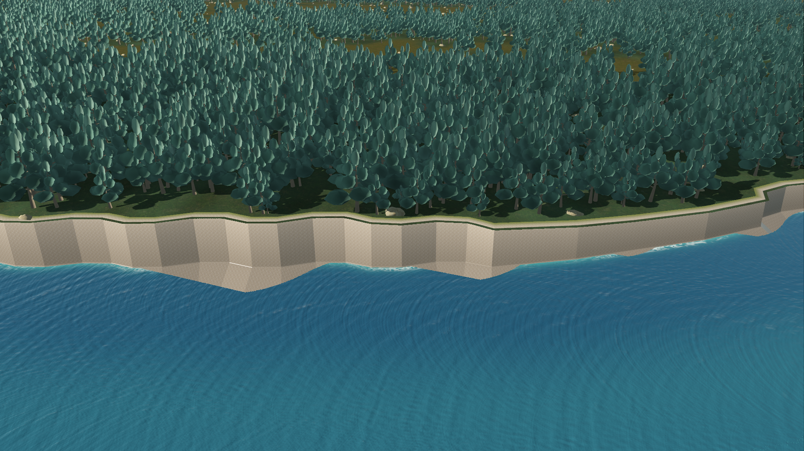
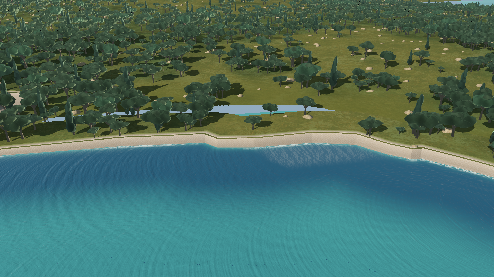
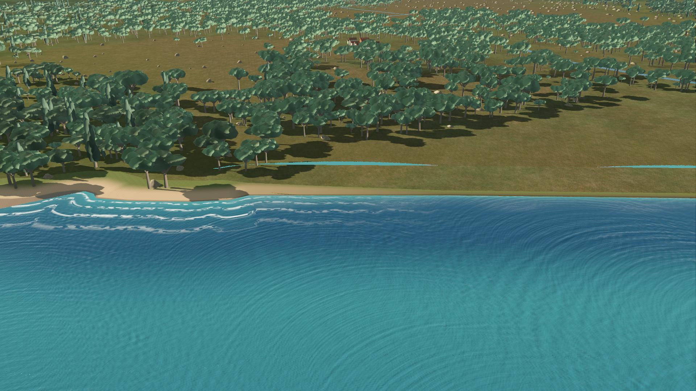
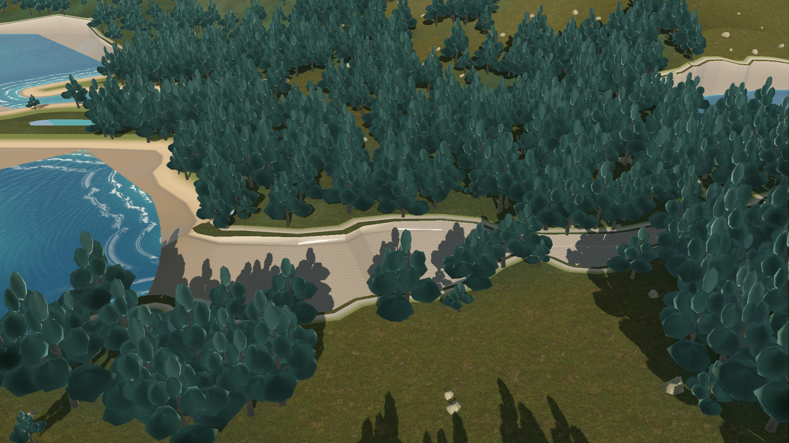
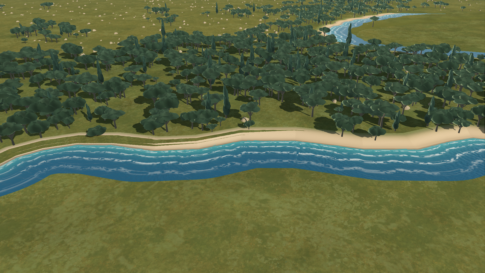
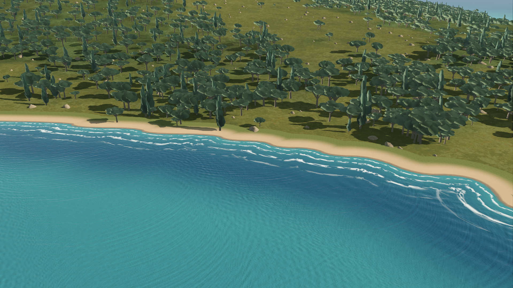
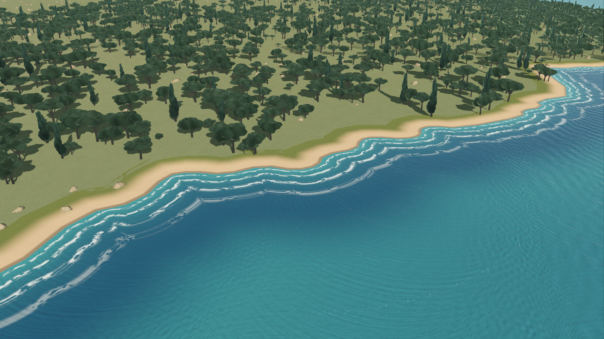

Actual settled production-game renders. Compare two time samples to inspect moving contact; launch the live preview for continuous motion. Beach, rock and bank styles are inferred rendering treatments.
Italian beach

English Channel cliffs

Corsican island coast

Low river-influenced bank

Norwegian fjord

Western Indian coast

Approved Pellaro control

Anatolian coast

Interactive preview: .\godot-prototype\world-coast-preview.ps1 -Coast dover. Use any reviewed coast name: tarquinii, dover, corsica, estuary, fjord, india, pellaro, anatolia.